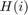
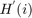
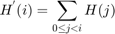
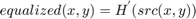
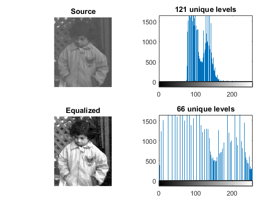

Histogram Equalization
In this demo, we show:
- What an image histogram is and why it is useful
- How to equalize histograms of images by using the OpenCV function cv.equalizeHist
Sources:
Contents
Theory
An Image Histogram is a graphical representation of the intensity distribution of an image. It quantifies the number of pixels for each intensity value considered.

Histogram Equalization is a method that improves the contrast in an image, in order to stretch out the intensity range. To make it clearer, from the image above, you can see that the pixels seem clustered around the middle of the available range of intensities. What Histogram Equalization does is to stretch out this range. Take a look at the figure below: The green circles indicate the underpopulated intensities. After applying the equalization, we get an histogram like the figure in the center. The resulting image is shown in the picture at right.

Equalization implies mapping one distribution (the given histogram) to another distribution (a wider and more uniform distribution of intensity values) so the intensity values are spreaded over the whole range. To accomplish the equalization effect, the remapping should be the cumulative distribution function (cdf) (more details, refer to Learning OpenCV). For the histogram , its cumulative distribution is:

To use this as a remapping function, we have to normalize such that the maximum value is 255 (or the maximum value for the intensity of the image). From the example above, the cumulative function is:

Finally, we use a simple remapping procedure to obtain the intensity values of the equalized image:

Code
This program:
- Loads an image
- Convert the original image to grayscale
- Equalize the Histogram by using the OpenCV function cv.equalizeHist
- Display the source and equalized images in a window.
Load source 8-bit grayscale image
if true im = which('pout.tif'); else im = which('tire.tif'); end if isempty(im) im = fullfile(mexopencv.root(), 'test', 'sudoku.jpg'); end src = cv.imread(im, 'Grayscale',true);
Apply histogram equalization
if true dst = cv.equalizeHist(src); elseif mexopencv.require('images') dst = histeq(src); end
Select function to plot 1D histogram
lvl = @(I) sprintf('%d unique levels', numel(unique(I(:)))); if mexopencv.require('images') histFunc = @imhist; else histFunc = @my_imhist; end
Display both images and their histograms
subplot(221), imshow(src), title('Source') subplot(223), imshow(dst), title('Equalized') subplot(222), histFunc(src), title(lvl(src)) subplot(224), histFunc(dst), title(lvl(dst))
Notice that the pixels are clustered around the center of the histogram. After applying the equalization, the image has certainly more contrast. Notice how the number of pixels is more distributed through the intensity range.
Helper function
function my_imhist(I) % compute histogram for 8-bit grayscale image bins = 0:255; counts = histc(double(I(:)), bins); % plot intensities counts stem(bins, counts, 'Marker','none') axis([0 255 0 Inf]) % plot color stripe at the bottom yl = round(0.05 * max(counts)); clr = repmat(uint8(bins), [10 1 3]); image('XData',[0 255], 'YData',[-yl 0], 'CData',clr) set(gca, 'Layer','top') axis tight end